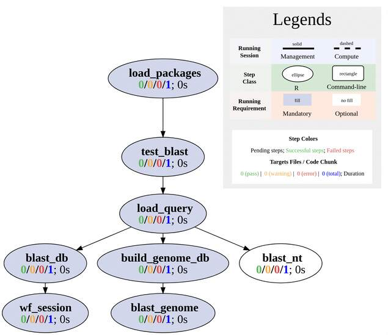

vignettes/SPblast.Rmd
SPblast.RmdThis section provides general description and how to use this cheminformatics workflow. In the actual analysis report, this section is usually removed.
This BLAST workflow template is based on the BLAST based R package rBLAST.
install.packages('rBLAST', repos = 'https://mhahsler.r-universe.dev').This workflow does: 1. Validate the BLAST installation 2. BLAST input fasta file with a reference genome. 3. BLAST input with a certain database 4. BLAST sequence with general databases to find out the source organism(s).
All are written in R (Linewise) steps, but
BLAST+ must be installed.

Users want to provide here background information about the design of their cheminformatics project.
This report describes the analysis of a BLAST project studying drug …
systemPipeR workflows can be designed and built
from start to finish with a single command, importing from an R Markdown
file or stepwise in interactive mode from the R console.
This tutorial will demonstrate how to build the workflow in an
interactive mode, appending each step. The workflow is constructed by
connecting each step via appendStep method. Each
SYSargsList instance contains instructions needed for
processing a set of input files with a specific command-line or R
software and the paths to the corresponding outfiles generated by a
particular tool/step.
To create a Workflow within systemPipeR, we can
start by defining an empty container and checking the directory
structure:
library(systemPipeR)
sal <- SPRproject()
salThis is an empty template that contains only one demo step. Refer to our website for how to add more steps. If you prefer a more enriched template, read this page for other pre-configured templates.
Molecules can be loaded or downloaded. This example dataset has 100 molecules.
# Here, the dataset is downloaded. If you already have the
# data locally, change URL to local path.
appendStep(sal) <- LineWise(code = {
# If you have a modular system, use following line
moduleload("ncbi-blast")
# If not, comment out line above you need to install
# BLAST and configure the PATH.
blast_check <- tryCMD("blastn", silent = TRUE)
if (blast_check == "error")
stop("Check your BLAST installation path.")
}, step_name = "test_blast", dependency = "load_packages")Load query sequence from a fasta file.
In this template, an example fasta is provided, with 10 sequences from Arabidopsis, Cholera, Human, Mouse, and COVID-19, 2 for each.
appendStep(sal) <- LineWise(code = {
query <- readDNAStringSet("data/example.fasta")
}, step_name = "load_query", dependency = "test_blast")In this step, we are trying to BLAST the query sequences to a reference genome and see if this genome contains the whole or part of the sequences.
In this example, a minimized tair10 genome is used. In
the real analysis, please replace it with a full genome
fasta file.
appendStep(sal) <- LineWise(code = {
reference <- "data/tair10.fasta"
# this command prepare BLAST-able database of genome
makeblastdb(reference, dbtype = "nucl")
}, step_name = "build_genome_db", dependency = "load_query")Next BLAST is performed. Since there are only 2 Arabidopsis sequences
in the example fasta. Only these two sequences are expected
to return statistically meaningful BLAST results.
There are plenty of databases on NCBI that one could download and run BLAST on. Once the databases are downloaded, unzip all files into one directory. We need to provide the path to the database.
In this example, we want to know if COVID-19 is a beta coronavirus.
Then, we can use some COVID sequence to BLAST all other existing beta
coronavirus sequences and find the similarity. This resource is
downloadable from NCBI. All downloaded
Betacoronavirus.XX.tar.gz files are unzipped to
/srv/projects/db/ncbi/preformatted/20220131/. Please change
the path according to your project. Then, we can BLAST the last two
sequence against the database.
Sometimes we do not know the origin of a sequence, for example, a
sequence comes from a contaminated sample, and we want to know the
source. In such cases, we would need to BLAST the sequence to a more
generic database. The most generic nucleotide BLAST database is the
nt database.
This database is extremely big and requires giant RAM and CPU cores to run. Please do not run the following example unless your system admin has provided you such store space and computational power. A better way for average the user is to use the website https://blast.ncbi.nlm.nih.gov/blast/Blast.cgi/ . The engine over there is optimized and can quickly search for the species information.
appendStep(sal) <- LineWise(code = {
sessionInfo()
}, step_name = "wf_session", dependency = "blast_db")To run the workflow, use runWF function. It executes all
the steps store in the workflow container. The execution will be on a
single machine without submitting to a queuing system of a computer
cluster.
sal <- runWF(sal, run_step = "mandatory") # remove `run_step` to run all steps to include optional stepsTo check command-line tools used in this workflow, use
listCmdTools, and use listCmdModules to check
if you have a modular system.
The following code will print out tools required in your custom SPR project in the report. In case you are running the workflow for the first and do not have a project yet, or you just want to browser this workflow, following code displays the tools required by default.
if (file.exists(file.path(".SPRproject", "SYSargsList.yml"))) {
local({
sal <- systemPipeR::SPRproject(resume = TRUE)
systemPipeR::listCmdTools(sal)
systemPipeR::listCmdModules(sal)
})
} else {
cat(crayon::blue$bold("Tools and modules required by this workflow are:\n"))
cat(c("bowtie2/2.4.5", "samtools/1.14", "macs2"), sep = "\n")
}## Tools and modules required by this workflow are:
## bowtie2/2.4.5
## samtools/1.14
## macs2This is the session information for rendering this report. To access
the session information of workflow running, check HTML report of
renderLogs.
## R version 4.3.1 (2023-06-16)
## Platform: x86_64-pc-linux-gnu (64-bit)
## Running under: Ubuntu 20.04.6 LTS
##
## Matrix products: default
## BLAS: /usr/lib/x86_64-linux-gnu/blas/libblas.so.3.9.0
## LAPACK: /usr/lib/x86_64-linux-gnu/lapack/liblapack.so.3.9.0
##
## locale:
## [1] LC_CTYPE=en_US.UTF-8 LC_NUMERIC=C
## [3] LC_TIME=en_US.UTF-8 LC_COLLATE=en_US.UTF-8
## [5] LC_MONETARY=en_US.UTF-8 LC_MESSAGES=en_US.UTF-8
## [7] LC_PAPER=en_US.UTF-8 LC_NAME=C
## [9] LC_ADDRESS=C LC_TELEPHONE=C
## [11] LC_MEASUREMENT=en_US.UTF-8 LC_IDENTIFICATION=C
##
## time zone: America/Los_Angeles
## tzcode source: system (glibc)
##
## attached base packages:
## [1] stats graphics grDevices utils datasets
## [6] methods base
##
## other attached packages:
## [1] BiocStyle_2.28.0
##
## loaded via a namespace (and not attached):
## [1] crayon_1.5.2 vctrs_0.6.2
## [3] cli_3.6.1 knitr_1.42
## [5] rlang_1.1.1 xfun_0.39
## [7] stringi_1.7.12 purrr_1.0.1
## [9] textshaping_0.3.6 jsonlite_1.8.4
## [11] glue_1.6.2 rprojroot_2.0.3
## [13] htmltools_0.5.5 formatR_1.14
## [15] ragg_1.2.5 sass_0.4.5
## [17] rmarkdown_2.21 evaluate_0.20
## [19] jquerylib_0.1.4 fastmap_1.1.1
## [21] lifecycle_1.0.3 yaml_2.3.7
## [23] memoise_2.0.1 bookdown_0.33
## [25] BiocManager_1.30.21.1 stringr_1.5.0
## [27] compiler_4.3.1 codetools_0.2-19
## [29] fs_1.6.2 rstudioapi_0.14
## [31] systemfonts_1.0.4 digest_0.6.31
## [33] R6_2.5.1 magrittr_2.0.3
## [35] bslib_0.4.2 tools_4.3.1
## [37] pkgdown_2.0.7 cachem_1.0.8
## [39] desc_1.4.2